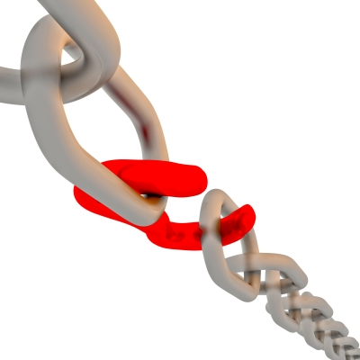

Hi All, As you all know that on page search engine optimization is more important than off page seo. So, today we will see another on page seo factor that can improve seo. We are talking about removing all broken links from website. In this post, I will cover few topics regarding this such as- what are broken links? How they affect your seo? How can you detect and remove them using broken link checker WordPress plugin?
What are Broken links?
Broken links or dead links are nothing but a link, which doesn’t exist. Whenever user clicks on such links it would throw a return code 404 (Page not found) error.
Reasons: a) You may have miss typed the URL while linking to internal or external post b) Old URLs have been removed, to which you have linked from your articles c) The most common reason: Commentors site link may have been removed or redirected. d) 404 error may also occur if you have deleted an old post.

Read more about it at wiki: What are broken links
How Dead links can affect SEO?
Search engine expect you to link to a relevant and related page from your post. Whenever you are linking to a related webpage, you are actually increasing your seo score. But if the link is broken then it can adversely affect on page seo because dead link would redirect a user to “PAGE NOT FOUND”. Search engine always concerned about user experience (especially Google) and 404 error is a bad user experience.
To get rid of these dirty links we have two solutions. a) Find such links by using below mentioned free tools and then fix it b) Use below WordPress plugin (for WordPress blogs only).
Broken link checker WordPress plugin
Download link: Broken link checker wordpress
For WordPress users, its very easy to remove dead links and redirects. Download the plugin from above link and install it ( easy steps to install wordpress plugins).
Features:
- you will be able to see all broken links from WordPress dashboard itself. isn’t it cool!
- It can also prevent search engine bots (crawlers) from following such broken or dead links.
- It scans pages, posts, comments and blogroll to find out any missing dead link or redirects.
- All broken links can be edited directly from WordPress dashboard. you won’t be needing to update each and every post. easy fix.sigh!!
Settings for this plugin are very simple so I will not go through those but if you face any issue then you can drop a comment below. I will be happy to help you out.
Free tools to check broken links
WordPress users can use above plugin to detect and remove such links, however if you are not using WordPress then you cannot use above plugin. Don’t worry! Below we have a list of free tools, which can scan your entire site for free. Some of the tools are really great.
- W3C Link checker – The reason I put it at top is that it doesn’t require any registration. You can simply give website link and it would scan all the posts within few seconds. Along with dead links, it checks for anchor text also.
- Broken link checker – I haven’t use this tool so far, but it seems similar to W3C link checker. Give it a try and let others know your experience with it, by comments.
- Free broken link check tool – you will be having a 3000 pages limit with free version of it. It can scan internal and external links both. Along with windows it can run on MacOS, Ipad, Linux and Unix.
- Bad link checking tool – The only bad thing about this tool is that it will ask you for Captcha (I hate captcha :D) before start scanning your website. Apart from this most of the features are similar with other free tools mentioned in this list.
- Link Tiger – Its reporting system is really Good. Also you can register them with free. The advantage of using their service is that they will allow you to check 100 links every week for free. Whenever they detect any broken link on a webpage, you will get a e-mail notification from them.
I love this plugin, as it makes out work easier. From finding to fixing. Though, they should work on memory issue, as most of shared hosting crashes when you try to use this plugin on a busy site..
I never faced any issue with this but as you said It may cause issue for high traffic site. Glad to see your comment Harsh!